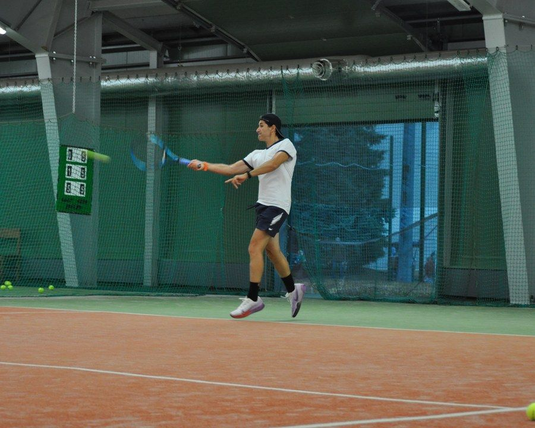
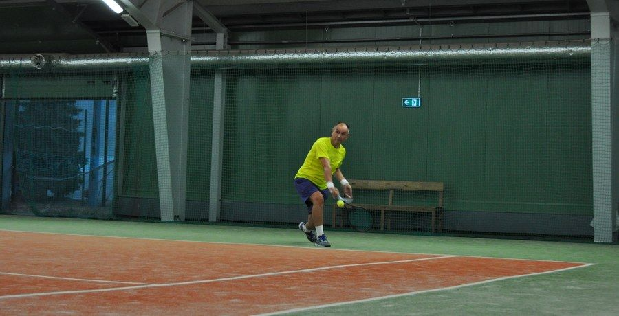

🌱
Zaczynasz od zera
Nigdy nie grałeś/aś? Zaczynamy od podstaw — trzymania rakiety, poruszania się i pierwszych odbić.
TENIS DLA DOROSŁYCH
Wracasz do gry po przerwie czy zaczynasz zupełnie od zera? Zajęcia prowadzę w tempie i formie dopasowanej do Twojego celu — rekreacja, kondycja, technika czy przygotowanie do rywalizacji.

JAK TO WYGLĄDA
Nie ma jednej ścieżki dla wszystkich dorosłych graczy — inaczej trenuje się z osobą, która nigdy nie miała rakiety w ręce, inaczej z kimś, kto wraca do gry po latach przerwy. Zajęcia obejmują pracę nad techniką uderzeń, taktyką gry i kondycją na korcie.

DLA KOGO
Zajęcia dla dorosłych dopasowuję indywidualnie — poniżej kilka typowych sytuacji, z którymi się do mnie zgłaszacie.
Nigdy nie grałeś/aś? Zaczynamy od podstaw — trzymania rakiety, poruszania się i pierwszych odbić.
Odświeżamy technikę i kondycję, żeby gra znów sprawiała frajdę bez kontuzji.
Pracujemy nad taktyką, mocniejszymi uderzeniami i konkretnymi elementami gry.
CENNIK
Zajęcia grupowe rozliczane są w pakietach 4 spotkań. Pełny cennik (razem z serwisem rakiet) znajdziesz też na stronie głównej.
100 zł / lekcja + kort
Trening 1:1 dopasowany do Twojego poziomu i celu. Do ceny lekcji doliczana jest opłata za kort.
Zapisz sięNajczęściej wybierane
130 zł / zajęcia za osobę
pakiet 4 zajęć: 520 zł
Trenujcie razem, płaćcie mniej.
Zapisz się85 zł / zajęcia za osobę
pakiet 4 zajęć: 340 zł
Dobry balans ceny i uwagi trenera.
Zapisz się65 zł / zajęcia za osobę
pakiet 4 zajęć: 260 zł
Najniższy koszt jednostkowy.
Zapisz sięFAQ
Tak — pracuję zarówno z osobami, które nigdy nie grały, jak i z wracającymi do gry po przerwie. Zajęcia dopasowuję do poziomu i celu.
Nie musisz mieć własnej rakiety — sprzęt zapewniam na zajęciach. Jeśli mimo to chcesz mieć własną, chętnie doradzę wybór, a mogę też ją naciągnąć w ramach serwisu rakiet.
Od września do czerwca trenujemy w hali SCS Sokół w Chorzowie. W wakacje (lipiec–sierpień) prowadzę indywidualne lekcje na kortach odkrytych na innych obiektach.
Najprościej zadzwoń, napisz e-mail albo skorzystaj z formularza w sekcji Kontakt — odpowiem i ustalimy termin pierwszych zajęć.
ZOBACZ TAKŻE